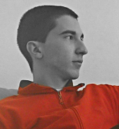

Autori


 Igor Dimitrijević (139/2012)
Moje ime je Igor Dimitrijević. Rođen sam 27.08.1993 godine u Kraljevu, ali živim u Vrnjačkoj Banji. Završio sam osnovnu i srednju školu (gimnaziju) u Vrnjačkoj Banji. Posle završene srednje škole sam odlučio da upišem Fakultet Tehničkih Nauka u Čačku. U slobodno vreme volim da se bavim programiranjem.
Moje ime je Bojan Bjelić. Rođen sam 30.03.1993 godine u Čačku. Završio sam osnovnu i srednju školu u Budvi. Posle srednje škole sam odlučio da se vratim u rodni kraj i tu nastavio svoje školovanje na Fakultetu Tehničkih Nauka u Čačku. Mnogo sam zainteresovan za sport i voleo bih posle završenih studija da se malo posvetim i sportu.